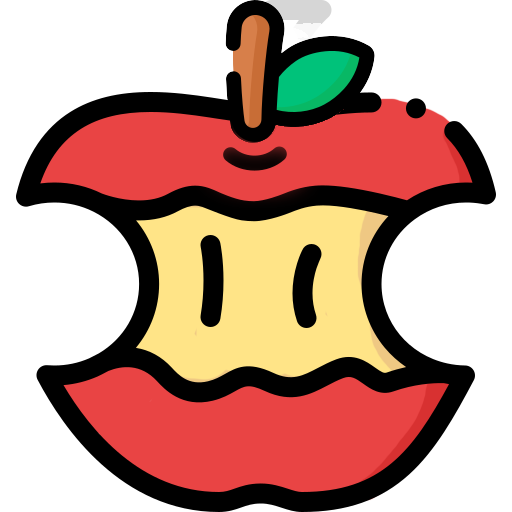

Hello, I'm
Front-end
Developer
PORT
WON A YOUNG

안녕하세요. 오류와 버그에 지지않는 개발자이고 싶은 원아영입니다. 제가 남들보다 특출나게 뛰어난 개발자는 아닐지언정, 눈 앞에 부닥친 어려운 문제를 포기하지 않고, 끝끝내 해결하여 포기하지 않은 스스로에게 칭찬할 수 있는 사람이고 싶습니다. 물론, 몇 시간이고 붙잡고 있어도 풀리지 않는 문제를 만났을 때는 멘탈이 사시나무처럼 흔들리기도하지만(또르르...) 저에겐 제 멘탈을 잡아줄 사랑하는 것들이 많이 있으니까 결코 지지 않습니다!😂 이런 저에게 더 관심이 생기신다면! 제 포트폴리오를 재미있게 봐주세요! 감사합니다
4
최근 개발 관련 관심사
'시각장애인이 듣기만 해도 머릿속으로 그려질 HTML코드를 짜라'는 말에 큰 감동을 받아, Semantic한 마크업을 위해 노력하고 있습니다.
단순 문법이 아니라 JS flow, Scope, Rendering, 비동기와 같이 Javascript의 기본 작동 원리에 흥미를 느끼고 있습니다
웹 서비스를 개발하려고 하다보니 클라이언트는 서버와 어떻게 통신하고, 어떻게 그 결과값을 화면에 구현할지, 또 서버에선 어떻게 클라이언트에게 데이터를 전달하는지 관심을 가지고 있습니다.
개발 공부를 하면 할수록 CS지식이 깊이 있는 이해를 위해 필요하다는 것을 나날이 느끼고, 틈틈히 관련된 공부를 하려고 노력 중입니다.
thwn4750@naver.com
github.com/WonAyoung
010.2874.4750
click!
